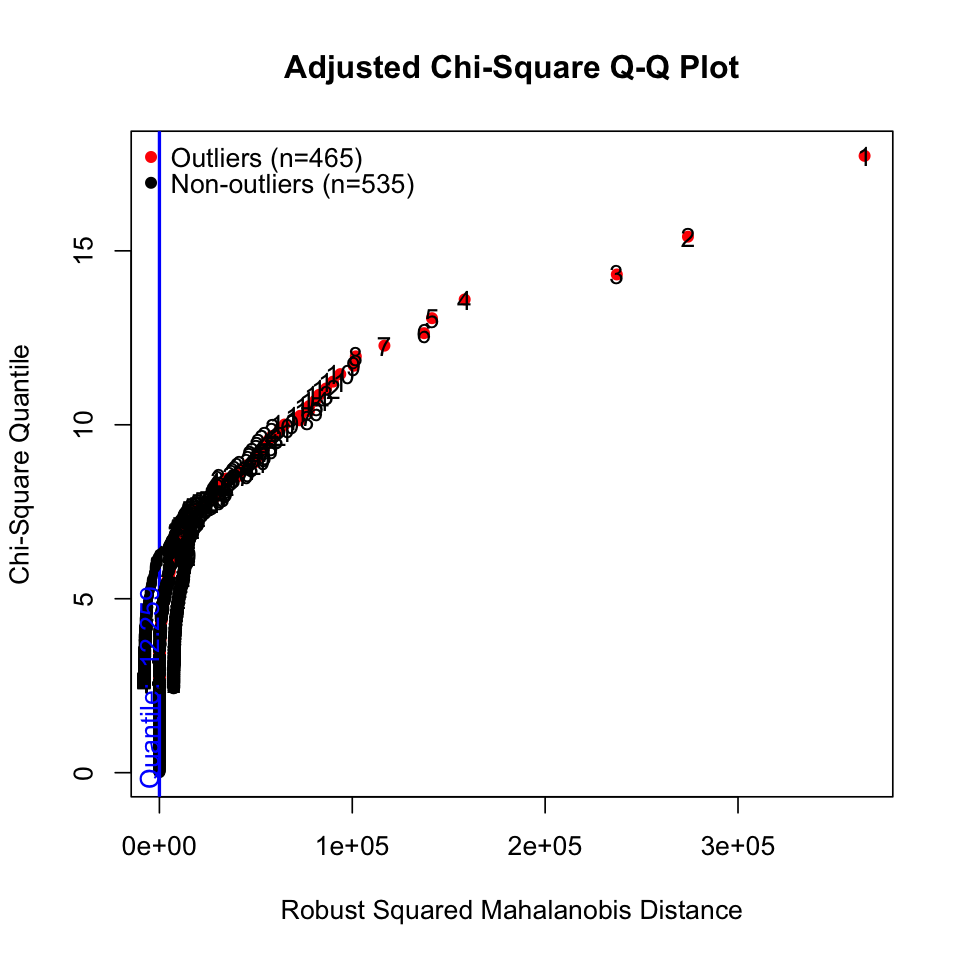

Load libraries
library(haven)
library(psych)
library(tidyverse)
library(lavaan)
library(semTools)
library(manymome)mixed
library(haven)
library(psych)
library(tidyverse)
library(lavaan)
library(semTools)
library(manymome)MVN: An R Package for Assessing Multivariate Normality
library(covsim)
set.seed(1)
sigma.target <- matrix(c(1, 0.4, 0.3, 0.4, 1, 0.4, 0.3, 0.4, 1), 3)
ig.sample <- rIG(N = 10^3, sigma.target = sigma.target, reps = 1, skewness = c(0, sqrt(8), 0), excesskurtosis = c(0, 12, 6))
df <- ig.sample |> as.data.frame() |> as_tibble()df |> print()# A tibble: 1,000 × 3
X1 X2 X3
<dbl> <dbl> <dbl>
1 -0.626 -0.609 -0.472
2 0.184 -0.125 0.799
3 -0.836 -0.749 -0.773
4 1.60 2.95 0.975
5 0.330 -0.268 0.693
6 -0.820 1.22 1.27
# ℹ 994 more rowslibrary(MVN)# multivariate normality
mvn(data = df, mvnTest = "hz")$multivariateNormality |> print() Test HZ p value MVN
1 Henze-Zirkler 26.31374 0 NO# multivariate normality plot
results <- mvn(data = df, multivariatePlot = "qq")
mvn(data = df, univariateTest = "AD")$univariateNormality |> print() Test Variable Statistic p value Normality
1 Anderson-Darling X1 0.2219 0.8297 YES
2 Anderson-Darling X2 62.9376 <0.001 NO
3 Anderson-Darling X3 4.1598 <0.001 NO # univariate normality histogram
results <- mvn(data = df, univariatePlot = "histogram")
# univariate normality scatterplot
results <- mvn(data = df, univariatePlot = "scatter")
# outliers
results <- mvn(data = df, mvnTest = "hz", multivariateOutlierMethod = "adj")
hw_mean <- haven::read_sav("data/chap 19 latent means/Homework means.sav")
hw_mean <- hw_mean |>
select(-ethnic, -Female, hw10 = f1s36a2, hw12 = f2s25f2) |>
na.omit()
hw_mean |> print()# A tibble: 798 × 13
bytxrstd bytxmstd bytxsstd bytxhstd parocc hw10 hw12 eng92 math92 sci92 soc92
<dbl+lbl> <dbl+lbl> <dbl+lbl> <dbl+lbl> <dbl> <dbl+lb> <dbl+l> <dbl> <dbl> <dbl> <dbl>
1 44.2 52.6 44.5 53.9 27.4 1 [1 HO… 2 [1-3… 8 4.4 8.5 5.37
2 39.9 56.0 55.7 56.4 70.6 4 [7-9 … 5 [10-… 5.5 4.62 5.5 4.83
3 52.7 47.9 44.8 41.8 56.3 3 [4-6 … 5 [10-… 8.37 3.5 8 6.29
4 42.3 61.9 53.5 47.0 70.6 3 [4-6 … 1 [LES… 8.33 5 7 7.67
5 63.2 56.1 64.7 62.6 27.4 3 [4-6 … 5 [10-… 6 4.92 3.11 7.5
6 59.0 40.7 42.1 50.4 70.6 2 [2-3 … 5 [10-… 6.75 6.43 7.2 6.83
# ℹ 792 more rows
# ℹ 2 more variables: byfaminc <dbl>, bypared <dbl+lbl># multivariate & univariate normality
mvn(data = hw_mean)$multivariateNormality |> print()
mvn(data = hw_mean)$univariateNormality |> print() Test HZ p value MVN
1 Henze-Zirkler 1.057538 0 NO
Test Variable Statistic p value Normality
1 Anderson-Darling bytxrstd 7.6118 <0.001 NO
2 Anderson-Darling bytxmstd 5.7422 <0.001 NO
3 Anderson-Darling bytxsstd 1.2679 0.0027 NO
4 Anderson-Darling bytxhstd 2.7309 <0.001 NO
5 Anderson-Darling parocc 53.6441 <0.001 NO
6 Anderson-Darling hw10 29.5673 <0.001 NO
7 Anderson-Darling hw12 16.6879 <0.001 NO
8 Anderson-Darling eng92 4.3695 <0.001 NO
9 Anderson-Darling math92 2.0612 <0.001 NO
10 Anderson-Darling sci92 2.2486 <0.001 NO
11 Anderson-Darling soc92 3.5983 <0.001 NO
12 Anderson-Darling byfaminc 12.5805 <0.001 NO
13 Anderson-Darling bypared 31.9085 <0.001 NO # multi-variate normality
results <- mvn(data = hw_mean, multivariatePlot = "qq")
# univariate normality
results <- mvn(data = hw_mean, univariatePlot = "histogram")
results <- mvn(data = hw_mean, univariatePlot = "box")Warning message in uniPlot(data, type = univariatePlot):
“Box-Plots are based on standardized values (centered and scaled).”
# outliers
results <- mvn(data = hw_mean, mvnTest = "hz", multivariateOutlierMethod = "adj", showOutliers = TRUE, showNewData = TRUE) # show options
이상치들
results$multivariateOutliers |> as_tibble() |> print()# A tibble: 214 × 3
Observation `Mahalanobis Distance` Outlier
<chr> <dbl> <chr>
1 1 86.4 TRUE
2 2 85.0 TRUE
3 3 79.4 TRUE
4 4 77.5 TRUE
5 5 77.0 TRUE
6 6 76.1 TRUE
# ℹ 208 more rows이상치가 제거된 데이터셋
results$newDataML 파라미터 추정치는 일반적으로 robust하나, 표준오차는 문제가 될 수 있음.
다음과 같은 ML에 대한 robust estimation들은 표준오차에 대한 보정을 제공함.
Source: p. 137, 163, Klein, R. B. (2023). Principles and Practice of Structural Equation Modeling (5e)
hw_mean <- haven::read_sav("data/chap 19 latent means/Homework means.sav")
hw_mean <- hw_mean |>
rename(hw10 = f1s36a2, hw12 = f2s25f2)# missing data
VIM::aggr(hw_mean, numbers = TRUE, sortVars = TRUE)
Variables sorted by number of missings:
Variable Count
hw12 0.096
hw10 0.046
byfaminc 0.042
bytxhstd 0.032
bytxsstd 0.031
bytxmstd 0.030
bytxrstd 0.029
eng92 0.020
math92 0.019
sci92 0.014
soc92 0.011
parocc 0.009
ethnic 0.009
bypared 0.001
Female 0.000
결측치가 포함된 경우: estimator = "MLR"
결측치가 없는 경우: estimator = "MLM"
hw_model <- "
famback =~ parocc + byfaminc + bypared
prevach =~ bytxrstd + bytxmstd + bytxsstd + bytxhstd
hw =~ hw12 + hw10
grades =~ eng92 + math92 + sci92 + soc92
bytxrstd ~~ eng92
bytxmstd ~~ math92
bytxsstd ~~ sci92
bytxhstd ~~ soc92
prevach ~ famback
grades ~ prevach + hw
hw ~ prevach + famback
"
sem_fit_robust <- sem(hw_model, data = hw_mean, estimator = "MLR")
summary(sem_fit_robust, standardized = TRUE, fit.measures = TRUE) |> print()lavaan 0.6-19 ended normally after 141 iterations
Estimator ML
Optimization method NLMINB
Number of model parameters 35
Used Total
Number of observations 798 1000
Model Test User Model:
Standard Scaled
Test Statistic 91.530 89.681
Degrees of freedom 56 56
P-value (Chi-square) 0.002 0.003
Scaling correction factor 1.021
Yuan-Bentler correction (Mplus variant)
Model Test Baseline Model:
Test statistic 5965.249 5618.146
Degrees of freedom 78 78
P-value 0.000 0.000
Scaling correction factor 1.062
User Model versus Baseline Model:
Comparative Fit Index (CFI) 0.994 0.994
Tucker-Lewis Index (TLI) 0.992 0.992
Robust Comparative Fit Index (CFI) 0.994
Robust Tucker-Lewis Index (TLI) 0.992
Loglikelihood and Information Criteria:
Loglikelihood user model (H0) -26118.080 -26118.080
Scaling correction factor 1.029
for the MLR correction
Loglikelihood unrestricted model (H1) NA NA
Scaling correction factor 1.024
for the MLR correction
Akaike (AIC) 52306.160 52306.160
Bayesian (BIC) 52470.033 52470.033
Sample-size adjusted Bayesian (SABIC) 52358.889 52358.889
Root Mean Square Error of Approximation:
RMSEA 0.028 0.027
90 Percent confidence interval - lower 0.017 0.016
90 Percent confidence interval - upper 0.038 0.038
P-value H_0: RMSEA <= 0.050 1.000 1.000
P-value H_0: RMSEA >= 0.080 0.000 0.000
Robust RMSEA 0.028
90 Percent confidence interval - lower 0.016
90 Percent confidence interval - upper 0.038
P-value H_0: Robust RMSEA <= 0.050 1.000
P-value H_0: Robust RMSEA >= 0.080 0.000
Standardized Root Mean Square Residual:
SRMR 0.023 0.023
Parameter Estimates:
Standard errors Sandwich
Information bread Observed
Observed information based on Hessian
Latent Variables:
Estimate Std.Err z-value P(>|z|) Std.lv Std.all
famback =~
parocc 1.000 14.926 0.720
byfaminc 0.116 0.006 18.977 0.000 1.731 0.714
bypared 0.071 0.003 20.360 0.000 1.060 0.846
prevach =~
bytxrstd 1.000 8.047 0.840
bytxmstd 1.010 0.034 29.773 0.000 8.126 0.844
bytxsstd 0.972 0.035 27.545 0.000 7.822 0.806
bytxhstd 0.930 0.033 28.448 0.000 7.487 0.812
hw =~
hw12 1.000 1.117 0.579
hw10 1.061 0.123 8.638 0.000 1.185 0.705
grades =~
eng92 1.000 2.190 0.901
math92 0.870 0.029 29.960 0.000 1.905 0.776
sci92 0.987 0.026 37.349 0.000 2.162 0.876
soc92 1.038 0.026 40.350 0.000 2.273 0.894
Regressions:
Estimate Std.Err z-value P(>|z|) Std.lv Std.all
prevach ~
famback 0.289 0.022 13.027 0.000 0.536 0.536
grades ~
prevach 0.136 0.012 11.785 0.000 0.500 0.500
hw 0.524 0.105 5.000 0.000 0.267 0.267
hw ~
prevach 0.048 0.008 5.615 0.000 0.342 0.342
famback 0.015 0.005 3.033 0.002 0.194 0.194
Covariances:
Estimate Std.Err z-value P(>|z|) Std.lv Std.all
.bytxrstd ~~
.eng92 0.357 0.273 1.306 0.191 0.357 0.065
.bytxmstd ~~
.math92 1.648 0.353 4.667 0.000 1.648 0.206
.bytxsstd ~~
.sci92 0.422 0.336 1.257 0.209 0.422 0.062
.bytxhstd ~~
.soc92 0.265 0.309 0.858 0.391 0.265 0.043
Variances:
Estimate Std.Err z-value P(>|z|) Std.lv Std.all
.parocc 206.883 13.049 15.854 0.000 206.883 0.481
.byfaminc 2.888 0.243 11.881 0.000 2.888 0.491
.bypared 0.445 0.046 9.579 0.000 0.445 0.284
.bytxrstd 27.069 1.975 13.703 0.000 27.069 0.295
.bytxmstd 26.756 1.863 14.360 0.000 26.756 0.288
.bytxsstd 32.884 2.044 16.087 0.000 32.884 0.350
.bytxhstd 29.043 2.016 14.407 0.000 29.043 0.341
.hw12 2.468 0.190 12.975 0.000 2.468 0.664
.hw10 1.420 0.186 7.629 0.000 1.420 0.503
.eng92 1.111 0.092 12.135 0.000 1.111 0.188
.math92 2.393 0.133 18.028 0.000 2.393 0.397
.sci92 1.419 0.106 13.371 0.000 1.419 0.233
.soc92 1.295 0.110 11.820 0.000 1.295 0.200
famback 222.792 18.016 12.366 0.000 1.000 1.000
.prevach 46.180 3.332 13.858 0.000 0.713 0.713
.hw 0.965 0.158 6.123 0.000 0.774 0.774
.grades 2.683 0.203 13.235 0.000 0.559 0.559
Bollen-Stine bootstrap
se = "bootstrap"test = "bootstrap"set.seed(123) # set seed for reproducibility
sem_fit_boot <- sem(hw_model, data = hw_mean, test = "bootstrap", se = "bootstrap")
summary(sem_fit_boot, standardized = TRUE, fit.measures = TRUE) |> print()lavaan 0.6-19 ended normally after 141 iterations
Estimator ML
Optimization method NLMINB
Number of model parameters 35
Used Total
Number of observations 798 1000
Model Test User Model:
Test statistic 91.530
Degrees of freedom 56
P-value (Chi-square) 0.002
Test statistic 91.530
Degrees of freedom 56
P-value (Bollen-Stine bootstrap) 0.005
Model Test Baseline Model:
Test statistic 5965.249
Degrees of freedom 78
P-value 0.000
User Model versus Baseline Model:
Comparative Fit Index (CFI) 0.994
Tucker-Lewis Index (TLI) 0.992
Loglikelihood and Information Criteria:
Loglikelihood user model (H0) -26118.080
Loglikelihood unrestricted model (H1) NA
Akaike (AIC) 52306.160
Bayesian (BIC) 52470.033
Sample-size adjusted Bayesian (SABIC) 52358.889
Root Mean Square Error of Approximation:
RMSEA 0.028
90 Percent confidence interval - lower 0.017
90 Percent confidence interval - upper 0.038
P-value H_0: RMSEA <= 0.050 1.000
P-value H_0: RMSEA >= 0.080 0.000
Standardized Root Mean Square Residual:
SRMR 0.023
Parameter Estimates:
Standard errors Bootstrap
Number of requested bootstrap draws 1000
Number of successful bootstrap draws 1000
Latent Variables:
Estimate Std.Err z-value P(>|z|) Std.lv Std.all
famback =~
parocc 1.000 14.926 0.720
byfaminc 0.116 0.006 18.949 0.000 1.731 0.714
bypared 0.071 0.004 20.265 0.000 1.060 0.846
prevach =~
bytxrstd 1.000 8.047 0.840
bytxmstd 1.010 0.033 30.379 0.000 8.126 0.844
bytxsstd 0.972 0.034 28.502 0.000 7.822 0.806
bytxhstd 0.930 0.034 27.195 0.000 7.487 0.812
hw =~
hw12 1.000 1.117 0.579
hw10 1.061 0.130 8.141 0.000 1.185 0.705
grades =~
eng92 1.000 2.190 0.901
math92 0.870 0.028 30.702 0.000 1.905 0.776
sci92 0.987 0.026 38.382 0.000 2.162 0.876
soc92 1.038 0.026 39.719 0.000 2.273 0.894
Regressions:
Estimate Std.Err z-value P(>|z|) Std.lv Std.all
prevach ~
famback 0.289 0.022 13.189 0.000 0.536 0.536
grades ~
prevach 0.136 0.012 11.377 0.000 0.500 0.500
hw 0.524 0.110 4.740 0.000 0.267 0.267
hw ~
prevach 0.048 0.009 5.391 0.000 0.342 0.342
famback 0.015 0.005 3.110 0.002 0.194 0.194
Covariances:
Estimate Std.Err z-value P(>|z|) Std.lv Std.all
.bytxrstd ~~
.eng92 0.357 0.271 1.318 0.188 0.357 0.065
.bytxmstd ~~
.math92 1.648 0.356 4.629 0.000 1.648 0.206
.bytxsstd ~~
.sci92 0.422 0.337 1.253 0.210 0.422 0.062
.bytxhstd ~~
.soc92 0.265 0.309 0.858 0.391 0.265 0.043
Variances:
Estimate Std.Err z-value P(>|z|) Std.lv Std.all
.parocc 206.883 13.110 15.781 0.000 206.883 0.481
.byfaminc 2.888 0.235 12.300 0.000 2.888 0.491
.bypared 0.445 0.047 9.521 0.000 0.445 0.284
.bytxrstd 27.069 1.978 13.686 0.000 27.069 0.295
.bytxmstd 26.756 1.868 14.322 0.000 26.756 0.288
.bytxsstd 32.884 2.105 15.618 0.000 32.884 0.350
.bytxhstd 29.043 2.033 14.286 0.000 29.043 0.341
.hw12 2.468 0.191 12.905 0.000 2.468 0.664
.hw10 1.420 0.193 7.369 0.000 1.420 0.503
.eng92 1.111 0.091 12.241 0.000 1.111 0.188
.math92 2.393 0.129 18.542 0.000 2.393 0.397
.sci92 1.419 0.101 14.096 0.000 1.419 0.233
.soc92 1.295 0.106 12.236 0.000 1.295 0.200
famback 222.792 18.013 12.368 0.000 1.000 1.000
.prevach 46.180 3.283 14.066 0.000 0.713 0.713
.hw 0.965 0.156 6.178 0.000 0.774 0.774
.grades 2.683 0.196 13.714 0.000 0.559 0.559
WLS (fully weighted least squares); estimator = "WLS"
also called ADF (Asymptotically Distribution-Free) estimator
sem_fit <- sem(hw_model, data = hw_mean, estimator = "WLS") # listwise deletion
summary(sem_fit, standardized = TRUE, fit.measures = TRUE) |> print()lavaan 0.6-19 ended normally after 203 iterations
Estimator WLS
Optimization method NLMINB
Number of model parameters 35
Used Total
Number of observations 798 1000
Model Test User Model:
Test statistic 92.368
Degrees of freedom 56
P-value (Chi-square) 0.002
Model Test Baseline Model:
Test statistic 1426.169
Degrees of freedom 78
P-value 0.000
User Model versus Baseline Model:
Comparative Fit Index (CFI) 0.973
Tucker-Lewis Index (TLI) 0.962
Root Mean Square Error of Approximation:
RMSEA 0.029
90 Percent confidence interval - lower 0.018
90 Percent confidence interval - upper 0.039
P-value H_0: RMSEA <= 0.050 1.000
P-value H_0: RMSEA >= 0.080 0.000
Standardized Root Mean Square Residual:
SRMR 0.028
Parameter Estimates:
Standard errors Standard
Information Expected
Information saturated (h1) model Unstructured
Latent Variables:
Estimate Std.Err z-value P(>|z|) Std.lv Std.all
famback =~
parocc 1.000 14.979 0.721
byfaminc 0.112 0.006 19.911 0.000 1.672 0.709
bypared 0.070 0.003 21.695 0.000 1.056 0.853
prevach =~
bytxrstd 1.000 7.978 0.838
bytxmstd 1.024 0.032 31.887 0.000 8.171 0.854
bytxsstd 0.981 0.033 29.308 0.000 7.828 0.814
bytxhstd 0.937 0.031 29.802 0.000 7.477 0.812
hw =~
hw12 1.000 1.120 0.581
hw10 1.077 0.124 8.652 0.000 1.206 0.720
grades =~
eng92 1.000 2.193 0.913
math92 0.881 0.028 31.987 0.000 1.931 0.786
sci92 0.984 0.025 40.086 0.000 2.158 0.879
soc92 1.029 0.025 41.273 0.000 2.257 0.896
Regressions:
Estimate Std.Err z-value P(>|z|) Std.lv Std.all
prevach ~
famback 0.304 0.021 14.656 0.000 0.570 0.570
grades ~
prevach 0.155 0.011 14.428 0.000 0.563 0.563
hw 0.400 0.092 4.359 0.000 0.204 0.204
hw ~
prevach 0.052 0.009 5.705 0.000 0.370 0.370
famback 0.012 0.005 2.496 0.013 0.155 0.155
Covariances:
Estimate Std.Err z-value P(>|z|) Std.lv Std.all
.bytxrstd ~~
.eng92 0.196 0.253 0.775 0.438 0.196 0.038
.bytxmstd ~~
.math92 1.548 0.326 4.749 0.000 1.548 0.205
.bytxsstd ~~
.sci92 0.105 0.302 0.347 0.729 0.105 0.016
.bytxhstd ~~
.soc92 0.191 0.293 0.652 0.514 0.191 0.032
Variances:
Estimate Std.Err z-value P(>|z|) Std.lv Std.all
.parocc 207.654 12.372 16.784 0.000 207.654 0.481
.byfaminc 2.765 0.215 12.858 0.000 2.765 0.497
.bypared 0.419 0.043 9.698 0.000 0.419 0.273
.bytxrstd 26.949 1.857 14.512 0.000 26.949 0.297
.bytxmstd 24.859 1.718 14.469 0.000 24.859 0.271
.bytxsstd 31.132 1.887 16.497 0.000 31.132 0.337
.bytxhstd 28.937 1.852 15.627 0.000 28.937 0.341
.hw12 2.461 0.188 13.088 0.000 2.461 0.662
.hw10 1.353 0.182 7.443 0.000 1.353 0.482
.eng92 0.964 0.085 11.394 0.000 0.964 0.167
.math92 2.305 0.126 18.318 0.000 2.305 0.382
.sci92 1.372 0.094 14.673 0.000 1.372 0.228
.soc92 1.247 0.100 12.469 0.000 1.247 0.197
famback 224.377 17.172 13.067 0.000 1.000 1.000
.prevach 42.929 3.117 13.771 0.000 0.675 0.675
.hw 0.971 0.151 6.411 0.000 0.774 0.774
.grades 2.576 0.178 14.508 0.000 0.536 0.536
결측치 분류
결측치에 대한 처리
mice package 참고 서적결측치에 대한 시각화: naniar package; Missing Data Visualisations, Getting Started with naniar
skimr::skim(hw_mean) |> print()── Data Summary ────────────────────────
Values
Name hw_mean
Number of rows 1000
Number of columns 15
_______________________
Column type frequency:
numeric 15
________________________
Group variables None
── Variable type: numeric ────────────────────────────────────────────────────────────────
skim_variable n_missing complete_rate mean sd p0 p25 p50 p75 p100 hist
1 bytxrstd 29 0.971 51.3 10.0 23.1 43.9 52.5 59.1 67.5 ▁▅▆▇▇
2 bytxmstd 30 0.97 51.5 9.89 30.3 43.2 51.3 59.6 71.2 ▃▇▇▇▅
3 bytxsstd 31 0.969 51.2 10.0 26.5 44.4 51.2 58.0 76.0 ▂▅▇▅▂
4 bytxhstd 32 0.968 51.4 9.69 24.2 45.3 52.0 59.0 69.5 ▁▃▇▇▆
5 parocc 9 0.991 51.6 21.4 7.32 27.4 58.0 66.2 81.9 ▃▂▁▇▂
6 hw10 46 0.954 2.53 1.68 0 1 2 3 7 ▇▇▆▂▂
7 ethnic 9 0.991 0.793 0.405 0 1 1 1 1 ▂▁▁▁▇
8 hw12 96 0.904 3.37 1.96 0 2 3 5 8 ▂▇▂▃▂
9 eng92 20 0.98 6.12 2.65 0 4.25 6.37 8.14 11.2 ▂▆▆▇▃
10 math92 19 0.981 5.52 2.62 0 3.5 5.5 7.5 11.5 ▃▇▇▇▂
11 sci92 14 0.986 5.79 2.63 0 3.75 6 8 11.5 ▃▆▇▇▃
12 soc92 11 0.989 6.23 2.80 0 4.33 6.5 8.5 11.7 ▃▅▇▇▃
13 Female 0 1 0.495 0.500 0 0 0 1 1 ▇▁▁▁▇
14 byfaminc 42 0.958 9.85 2.59 1 8 10 11 15 ▁▁▃▇▂
15 bypared 1 0.999 3.13 1.26 1 2 3 4 6 ▅▇▃▂▁library(naniar)# 결측치 요약 시각화
gg_miss_var(hw_mean, facet = ethnic) # by ethnic group
# 개별 결측치, 군집화 패턴 확인
vis_miss(hw_mean, cluster = TRUE)
# 함께 누락된 변수들의 패턴 확인
gg_miss_upset(hw_mean, nsets = n_var_miss(hw_mean))
결측치에 대한 패턴
학업 성취도가 낮은 아이들의 경우 숙제를 한 시간을 보고하지 않는 경향이 있을 수 있다는 의심하에,
다음과 같이 대략 세 변수에 대해 결측치 여부를 나타내는 변수를 추가하여, 다른 변수들과의 상관계수를 살펴보면,
# add a variable to the dataset that indicates the missingness
hw_mean <- hw_mean |>
mutate(
missing_reading = is.na(bytxrstd),
missing_hw12 = is.na(hw12),
missing_hw10 = is.na(hw10)
)psych::lowerCor(hw_mean) bytxr bytxm bytxs bytxh parcc hw10 ethnc hw12 eng92 mth92 sci92 soc92
bytxrstd 1.00
bytxmstd 0.71 1.00
bytxsstd 0.69 0.71 1.00
bytxhstd 0.72 0.69 0.69 1.00
parocc 0.33 0.35 0.28 0.30 1.00
hw10 0.27 0.27 0.23 0.23 0.17 1.00
ethnic 0.24 0.25 0.27 0.24 0.24 0.07 1.00
hw12 0.24 0.26 0.21 0.19 0.13 0.40 0.04 1.00
eng92 0.52 0.49 0.40 0.44 0.27 0.33 0.22 0.25 1.00
math92 0.46 0.51 0.39 0.39 0.23 0.27 0.19 0.23 0.74 1.00
sci92 0.51 0.51 0.44 0.46 0.24 0.30 0.21 0.25 0.80 0.74 1.00
soc92 0.54 0.52 0.43 0.48 0.26 0.33 0.19 0.26 0.84 0.72 0.80 1.00
Female -0.16 -0.02 0.04 0.00 -0.01 -0.13 -0.02 -0.11 -0.23 -0.12 -0.15 -0.15
byfaminc 0.37 0.38 0.31 0.36 0.52 0.18 0.29 0.18 0.31 0.24 0.29 0.32
bypared 0.41 0.42 0.38 0.37 0.60 0.23 0.24 0.20 0.39 0.33 0.35 0.37
missing_reading* NA NA NA NA -0.03 -0.03 -0.03 0.03 -0.02 -0.02 -0.02 -0.03
missing_hw12* -0.22 -0.18 -0.19 -0.19 -0.17 -0.11 -0.07 NA -0.39 -0.31 -0.36 -0.39
missing_hw10* -0.22 -0.16 -0.16 -0.18 -0.10 NA -0.10 -0.07 -0.28 -0.24 -0.24 -0.28
Femal byfmn byprd mss_* m_12* m_10*
Female 1.00
byfaminc 0.05 1.00
bypared 0.00 0.59 1.00
missing_reading* 0.02 -0.05 -0.05 1.00
missing_hw12* 0.03 -0.20 -0.17 0.00 1.00
missing_hw10* 0.00 -0.17 -0.15 -0.01 0.40 1.00ggplot(hw_mean, aes(x = missing_hw12, y = eng92)) +
geom_violin() +
geom_jitter(alpha=.3)
ggplot(hw_mean, aes(x = hw12, y = eng92)) +
geom_miss_point(jitter = 0.1)
Full Information Maximum Likelihood
hw_mean <- haven::read_sav("data/chap 19 latent means/Homework means.sav")
hw_mean <- hw_mean |>
rename(hw10 = f1s36a2, hw12 = f2s25f2) |>
labelled::remove_labels()# NA가 하나라도 포함된 행들만 추출
hw_mean |>
filter(rowSums(is.na(hw_mean)) > 0) |> print()# A tibble: 206 × 15
bytxrstd bytxmstd bytxsstd bytxhstd parocc hw10 ethnic hw12 eng92 math92 sci92 soc92
<dbl> <dbl> <dbl> <dbl> <dbl> <dbl> <dbl> <dbl> <dbl> <dbl> <dbl> <dbl>
1 39.9 40.8 33.4 41.9 56.3 0 1 NA 4.4 2.5 3 0
2 46.4 40.2 40.9 54 56.3 3 1 NA 3.25 5 3.5 3.5
3 44.6 36.2 40.5 29.1 15.6 2 1 4 2 NA 4 1.67
4 48.4 45.4 62.4 48.8 66.2 1 1 6 1.8 1.5 3.25 3.78
5 46.4 42.0 45.1 32.0 32.4 NA 0 NA 0 NA NA NA
6 67.5 50.2 51.0 64.7 61.3 1 1 NA 4.25 1.75 1.67 6.43
# ℹ 200 more rows
# ℹ 3 more variables: Female <dbl>, byfaminc <dbl>, bypared <dbl>hw_model <- "
famback =~ parocc + byfaminc + bypared
prevach =~ bytxrstd + bytxmstd + bytxsstd + bytxhstd
hw =~ hw12 + hw10
grades =~ eng92 + math92 + sci92 + soc92
bytxrstd ~~ eng92
bytxmstd ~~ math92
bytxsstd ~~ sci92
bytxhstd ~~ soc92
prevach ~ famback
grades ~ prevach + hw
hw ~ prevach + famback
"
sem_fit <- sem(hw_model,
data = hw_mean,
estimator = "MLR", # robust ML for non-normal data
missing = "FIML" # FIML for missing data
)
summary(sem_fit, standardized = TRUE, fit.measures = TRUE) |> print()lavaan 0.6-19 ended normally after 171 iterations
Estimator ML
Optimization method NLMINB
Number of model parameters 48
Number of observations 1000
Number of missing patterns 42
Model Test User Model:
Standard Scaled
Test Statistic 113.358 109.613
Degrees of freedom 56 56
P-value (Chi-square) 0.000 0.000
Scaling correction factor 1.034
Yuan-Bentler correction (Mplus variant)
Model Test Baseline Model:
Test statistic 7792.886 7259.137
Degrees of freedom 78 78
P-value 0.000 0.000
Scaling correction factor 1.074
User Model versus Baseline Model:
Comparative Fit Index (CFI) 0.993 0.993
Tucker-Lewis Index (TLI) 0.990 0.990
Robust Comparative Fit Index (CFI) 0.993
Robust Tucker-Lewis Index (TLI) 0.990
Loglikelihood and Information Criteria:
Loglikelihood user model (H0) -32104.831 -32104.831
Scaling correction factor 1.015
for the MLR correction
Loglikelihood unrestricted model (H1) -32048.152 -32048.152
Scaling correction factor 1.025
for the MLR correction
Akaike (AIC) 64305.662 64305.662
Bayesian (BIC) 64541.235 64541.235
Sample-size adjusted Bayesian (SABIC) 64388.784 64388.784
Root Mean Square Error of Approximation:
RMSEA 0.032 0.031
90 Percent confidence interval - lower 0.023 0.022
90 Percent confidence interval - upper 0.040 0.039
P-value H_0: RMSEA <= 0.050 1.000 1.000
P-value H_0: RMSEA >= 0.080 0.000 0.000
Robust RMSEA 0.032
90 Percent confidence interval - lower 0.023
90 Percent confidence interval - upper 0.041
P-value H_0: Robust RMSEA <= 0.050 1.000
P-value H_0: Robust RMSEA >= 0.080 0.000
Standardized Root Mean Square Residual:
SRMR 0.023 0.023
Parameter Estimates:
Standard errors Sandwich
Information bread Observed
Observed information based on Hessian
Latent Variables:
Estimate Std.Err z-value P(>|z|) Std.lv Std.all
famback =~
parocc 1.000 15.210 0.710
byfaminc 0.124 0.006 21.754 0.000 1.891 0.728
bypared 0.069 0.003 22.121 0.000 1.049 0.834
prevach =~
bytxrstd 1.000 8.532 0.852
bytxmstd 0.988 0.028 35.823 0.000 8.432 0.853
bytxsstd 0.960 0.029 32.658 0.000 8.189 0.819
bytxhstd 0.942 0.028 34.160 0.000 8.039 0.830
hw =~
hw12 1.000 1.171 0.592
hw10 0.994 0.104 9.546 0.000 1.164 0.688
grades =~
eng92 1.000 2.436 0.915
math92 0.876 0.023 37.674 0.000 2.135 0.812
sci92 0.961 0.022 44.129 0.000 2.341 0.884
soc92 1.049 0.021 50.586 0.000 2.555 0.908
Regressions:
Estimate Std.Err z-value P(>|z|) Std.lv Std.all
prevach ~
famback 0.325 0.021 15.413 0.000 0.579 0.579
grades ~
prevach 0.140 0.012 11.905 0.000 0.490 0.490
hw 0.655 0.113 5.784 0.000 0.315 0.315
hw ~
prevach 0.045 0.008 5.555 0.000 0.331 0.331
famback 0.018 0.005 3.774 0.000 0.235 0.235
Covariances:
Estimate Std.Err z-value P(>|z|) Std.lv Std.all
.bytxrstd ~~
.eng92 0.486 0.256 1.901 0.057 0.486 0.086
.bytxmstd ~~
.math92 1.573 0.317 4.954 0.000 1.573 0.199
.bytxsstd ~~
.sci92 0.459 0.319 1.441 0.150 0.459 0.064
.bytxhstd ~~
.soc92 0.266 0.305 0.870 0.384 0.266 0.042
Intercepts:
Estimate Std.Err z-value P(>|z|) Std.lv Std.all
.parocc 51.388 0.682 75.396 0.000 51.388 2.400
.byfaminc 9.841 0.083 118.223 0.000 9.841 3.792
.bypared 3.128 0.040 78.544 0.000 3.128 2.485
.bytxrstd 51.257 0.319 160.600 0.000 51.257 5.120
.bytxmstd 51.493 0.316 163.103 0.000 51.493 5.206
.bytxsstd 51.179 0.320 160.003 0.000 51.179 5.117
.bytxhstd 51.373 0.310 165.655 0.000 51.373 5.302
.hw12 3.280 0.066 49.786 0.000 3.280 1.659
.hw10 2.481 0.054 45.860 0.000 2.481 1.465
.eng92 6.074 0.085 71.685 0.000 6.074 2.281
.math92 5.482 0.084 65.528 0.000 5.482 2.086
.sci92 5.770 0.084 68.784 0.000 5.770 2.177
.soc92 6.207 0.089 69.576 0.000 6.207 2.207
Variances:
Estimate Std.Err z-value P(>|z|) Std.lv Std.all
.parocc 227.271 12.684 17.918 0.000 227.271 0.496
.byfaminc 3.161 0.237 13.350 0.000 3.161 0.469
.bypared 0.483 0.043 11.272 0.000 0.483 0.305
.bytxrstd 27.413 1.764 15.542 0.000 27.413 0.274
.bytxmstd 26.728 1.629 16.410 0.000 26.728 0.273
.bytxsstd 32.977 1.865 17.680 0.000 32.977 0.330
.bytxhstd 29.242 1.810 16.160 0.000 29.242 0.312
.hw12 2.537 0.185 13.713 0.000 2.537 0.649
.hw10 1.510 0.168 8.994 0.000 1.510 0.527
.eng92 1.155 0.086 13.415 0.000 1.155 0.163
.math92 2.349 0.124 18.993 0.000 2.349 0.340
.sci92 1.541 0.100 15.374 0.000 1.541 0.219
.soc92 1.383 0.111 12.409 0.000 1.383 0.175
famback 231.337 16.922 13.671 0.000 1.000 1.000
.prevach 48.379 3.148 15.367 0.000 0.665 0.665
.hw 1.021 0.155 6.570 0.000 0.745 0.745
.grades 3.063 0.204 14.992 0.000 0.516 0.516
semTools에서 제공하는 imputation이 통합된 lavaan 함수를 이용하면; sem.mi()
hw_mean <- haven::read_sav("data/chap 19 latent means/Homework means.sav")
hw_mean <- hw_mean |>
rename(hw10 = f1s36a2, hw12 = f2s25f2) |>
labelled::remove_labels()hw_model <- "
famback =~ parocc + byfaminc + bypared
prevach =~ bytxrstd + bytxmstd + bytxsstd + bytxhstd
hw =~ hw12 + hw10
grades =~ eng92 + math92 + sci92 + soc92
bytxrstd ~~ eng92
bytxmstd ~~ math92
bytxsstd ~~ sci92
bytxhstd ~~ soc92
prevach ~ famback
grades ~ prevach + hw
hw ~ prevach + famback
"
pred_mat <- mice::quickpred(hw_mean, mincor = 0.25) # r > 0.23인 변수만 사용
sem_fit <- sem.mi(hw_model,
data = hw_mean,
estimator = "MLM",
miPackage = "mice", m = 10, seed = 123, # mice 패키지 사용
miArgs = list(predictorMatrix = pred_mat)
)summary(sem_fit, standardized = TRUE, fit.measures = TRUE)lavaan.mi object based on 10 imputed data sets.
See class?lavaan.mi help page for available methods.
Convergence information:
The model converged on 10 imputed data sets
Rubin's (1987) rules were used to pool point and SE estimates across 10 imputed data sets, and to calculate degrees of freedom for each parameter's t test and CI.
Model Test User Model:
Standard Scaled
Test statistic 112.725 109.033
Degrees of freedom 56 56
P-value 0.000 0.000
Average scaling correction factor 1.034
Model Test Baseline Model:
Test statistic 7537.897 7315.013
Degrees of freedom 78 78
P-value 0.000 0.000
Scaling correction factor 1.030
User Model versus Baseline Model:
Comparative Fit Index (CFI) 0.992 0.993
Tucker-Lewis Index (TLI) 0.989 0.990
Robust Comparative Fit Index (CFI) 0.993
Robust Tucker-Lewis Index (TLI) 1.000
Root Mean Square Error of Approximation:
RMSEA 0.032 0.031
Confidence interval - lower 0.023 0.023
Confidence interval - upper 0.040 0.040
P-value H_0: RMSEA <= 0.05 1.000 1.000
Robust RMSEA 0.031
Confidence interval - lower 0.022
Confidence interval - upper 0.040
Standardized Root Mean Square Residual:
SRMR 0.025 0.025| lhs | op | rhs | exo | est | se | t | df | pvalue | std.lv | std.all | label |
|---|---|---|---|---|---|---|---|---|---|---|---|
| <chr> | <chr> | <chr> | <int> | <lvn.vctr> | <dbl> | <dbl> | <dbl> | <dbl> | <dbl> | <dbl> | <chr> |
| famback | =~ | parocc | 0 | 1.00000000 | 0.000000000 | NA | NA | NA | 15.2828997 | 0.71301955 | |
| famback | =~ | byfaminc | 0 | 0.12370573 | 0.005690005 | 21.7408805 | 1141.3640 | 5.733876e-88 | 1.8905822 | 0.72729081 | |
| famback | =~ | bypared | 0 | 0.06849679 | 0.003114310 | 21.9942113 | 1414.5960 | 1.866205e-92 | 1.0468296 | 0.83150687 | |
| prevach | =~ | bytxrstd | 0 | 1.00000000 | 0.000000000 | NA | NA | NA | 8.5410873 | 0.85321812 | |
| prevach | =~ | bytxmstd | 0 | 0.98690498 | 0.027070282 | 36.4571372 | 3451.9446 | 1.789247e-246 | 8.4292415 | 0.85221074 | |
| prevach | =~ | bytxsstd | 0 | 0.95931018 | 0.029087838 | 32.9797694 | Inf | 1.584160e-238 | 8.1935520 | 0.81824393 | |
| prevach | =~ | bytxhstd | 0 | 0.94325733 | 0.027857877 | 33.8596268 | Inf | 2.619044e-251 | 8.0564432 | 0.83058028 | |
| hw | =~ | hw12 | 0 | 1.00000000 | 0.000000000 | NA | NA | NA | 1.1668693 | 0.59547695 | |
| hw | =~ | hw10 | 0 | 0.97841418 | 0.103822250 | 9.4239354 | 544.9895 | 1.229317e-19 | 1.1416814 | 0.67880611 | |
| grades | =~ | eng92 | 0 | 1.00000000 | 0.000000000 | NA | NA | NA | 2.4370432 | 0.91476868 | |
| grades | =~ | math92 | 0 | 0.87295478 | 0.023107399 | 37.7781501 | 2584.6564 | 4.580967e-249 | 2.1274285 | 0.81162293 | |
| grades | =~ | sci92 | 0 | 0.96113841 | 0.021537726 | 44.6258079 | 8629.0701 | 0.000000e+00 | 2.3423358 | 0.88359113 | |
| grades | =~ | soc92 | 0 | 1.04828686 | 0.021246466 | 49.3393513 | 3930.7034 | 0.000000e+00 | 2.5547204 | 0.90866901 | |
| bytxrstd | ~~ | eng92 | 0 | 0.43990580 | 0.258920475 | 1.6989996 | Inf | 8.931925e-02 | 0.4399058 | 0.07828840 | |
| bytxmstd | ~~ | math92 | 0 | 1.57101400 | 0.313645698 | 5.0088811 | 2646.6204 | 5.835008e-07 | 1.5710140 | 0.19825462 | |
| bytxsstd | ~~ | sci92 | 0 | 0.48398794 | 0.318167538 | 1.5211732 | 1290.1790 | 1.284614e-01 | 0.4839879 | 0.06773146 | |
| bytxhstd | ~~ | soc92 | 0 | 0.27382853 | 0.301121893 | 0.9093611 | 4732.3286 | 3.632059e-01 | 0.2738285 | 0.04318456 | |
| prevach | ~ | famback | 0 | 0.32329570 | 0.020859303 | 15.4988733 | 6564.1314 | 3.071651e-53 | 0.5784856 | 0.57848556 | |
| grades | ~ | prevach | 0 | 0.14288887 | 0.011142583 | 12.8236748 | 2913.1366 | 1.162996e-36 | 0.5007816 | 0.50078155 | |
| grades | ~ | hw | 0 | 0.62290066 | 0.104437801 | 5.9643219 | 5117.2662 | 2.621397e-09 | 0.2982482 | 0.29824815 | |
| hw | ~ | prevach | 0 | 0.04377283 | 0.008136173 | 5.3800268 | 1115.2214 | 9.071459e-08 | 0.3204022 | 0.32040224 | |
| hw | ~ | famback | 0 | 0.01736076 | 0.004573766 | 3.7957251 | 936.6614 | 1.566764e-04 | 0.2273800 | 0.22738002 | |
| parocc | ~~ | parocc | 0 | 225.85165787 | 12.964333604 | 17.4210002 | 5171.2952 | 4.274349e-66 | 225.8516579 | 0.49160312 | |
| byfaminc | ~~ | byfaminc | 0 | 3.18302601 | 0.235004907 | 13.5445087 | 1718.3683 | 8.702346e-40 | 3.1830260 | 0.47104808 | |
| bypared | ~~ | bypared | 0 | 0.48911513 | 0.042373889 | 11.5428424 | 2653.6052 | 4.148007e-30 | 0.4891151 | 0.30859633 | |
| bytxrstd | ~~ | bytxrstd | 0 | 27.25870165 | 1.759913626 | 15.4886588 | Inf | 4.138338e-54 | 27.2587017 | 0.27201884 | |
| bytxmstd | ~~ | bytxmstd | 0 | 26.78035183 | 1.625683349 | 16.4732891 | Inf | 5.708065e-61 | 26.7803518 | 0.27373686 | |
| bytxsstd | ~~ | bytxsstd | 0 | 33.13751227 | 1.894505716 | 17.4913762 | 8018.7287 | 2.924619e-67 | 33.1375123 | 0.33047687 | |
| bytxhstd | ~~ | bytxhstd | 0 | 29.17939009 | 1.817673741 | 16.0531505 | 3392.5225 | 5.949782e-56 | 29.1793901 | 0.31013640 | |
| hw12 | ~~ | hw12 | 0 | 2.47826812 | 0.182481998 | 13.5808910 | 1089.4406 | 6.312859e-39 | 2.4782681 | 0.64540720 | |
| hw10 | ~~ | hw10 | 0 | 1.52533836 | 0.163780121 | 9.3133302 | 452.8842 | 5.406713e-19 | 1.5253384 | 0.53922226 | |
| eng92 | ~~ | eng92 | 0 | 1.15829557 | 0.087647693 | 13.2153573 | 5844.1262 | 2.609609e-39 | 1.1582956 | 0.16319826 | |
| math92 | ~~ | math92 | 0 | 2.34475350 | 0.123578677 | 18.9737708 | 4056.8716 | 5.536777e-77 | 2.3447535 | 0.34126822 | |
| sci92 | ~~ | sci92 | 0 | 1.54087839 | 0.099834790 | 15.4342828 | 6668.4623 | 7.826780e-53 | 1.5408784 | 0.21926672 | |
| soc92 | ~~ | soc92 | 0 | 1.37792033 | 0.113646859 | 12.1245791 | Inf | 7.826122e-34 | 1.3779203 | 0.17432063 | |
| famback | ~~ | famback | 0 | 233.56702422 | 17.122320313 | 13.6410849 | 3440.5422 | 2.657208e-41 | 1.0000000 | 1.00000000 | |
| prevach | ~~ | prevach | 0 | 48.53772177 | 3.203338977 | 15.1522278 | 4139.1422 | 1.621940e-50 | 0.6653545 | 0.66535445 | |
| hw | ~~ | hw | 0 | 1.03664438 | 0.154388571 | 6.7145151 | 525.8970 | 4.903941e-11 | 0.7613518 | 0.76135184 | |
| grades | ~~ | grades | 0 | 3.11964569 | 0.200861301 | 15.5313426 | 7228.3724 | 1.549836e-53 | 0.5252654 | 0.52526542 |
kNN(k-nearest neighbors) imputation을 이용해서 대체된 값으로 채워진 데이터셋을 사용하면,
hw_mean_imp <- VIM::kNN(hw_mean, k = 5) # kNN imputation
sem_fit <- sem(hw_model,
data = hw_mean_imp,
estimator = "MLM"
)
summary(sem_fit, fit.measures = TRUE, standardized = TRUE) |> print()lavaan 0.6-19 ended normally after 154 iterations
Estimator ML
Optimization method NLMINB
Number of model parameters 35
Number of observations 1000
Model Test User Model:
Standard Scaled
Test Statistic 106.164 102.742
Degrees of freedom 56 56
P-value (Chi-square) 0.000 0.000
Scaling correction factor 1.033
Satorra-Bentler correction
Model Test Baseline Model:
Test statistic 7999.046 7841.386
Degrees of freedom 78 78
P-value 0.000 0.000
Scaling correction factor 1.020
User Model versus Baseline Model:
Comparative Fit Index (CFI) 0.994 0.994
Tucker-Lewis Index (TLI) 0.991 0.992
Robust Comparative Fit Index (CFI) 0.994
Robust Tucker-Lewis Index (TLI) 0.992
Loglikelihood and Information Criteria:
Loglikelihood user model (H0) -32980.843 -32980.843
Loglikelihood unrestricted model (H1) -32927.762 -32927.762
Akaike (AIC) 66031.687 66031.687
Bayesian (BIC) 66203.458 66203.458
Sample-size adjusted Bayesian (SABIC) 66092.296 66092.296
Root Mean Square Error of Approximation:
RMSEA 0.030 0.029
90 Percent confidence interval - lower 0.021 0.020
90 Percent confidence interval - upper 0.039 0.037
P-value H_0: RMSEA <= 0.050 1.000 1.000
P-value H_0: RMSEA >= 0.080 0.000 0.000
Robust RMSEA 0.029
90 Percent confidence interval - lower 0.020
90 Percent confidence interval - upper 0.038
P-value H_0: Robust RMSEA <= 0.050 1.000
P-value H_0: Robust RMSEA >= 0.080 0.000
Standardized Root Mean Square Residual:
SRMR 0.024 0.024
Parameter Estimates:
Standard errors Robust.sem
Information Expected
Information saturated (h1) model Structured
Latent Variables:
Estimate Std.Err z-value P(>|z|) Std.lv Std.all
famback =~
parocc 1.000 15.091 0.707
byfaminc 0.123 0.006 22.010 0.000 1.857 0.725
bypared 0.070 0.003 22.471 0.000 1.050 0.835
prevach =~
bytxrstd 1.000 8.496 0.848
bytxmstd 0.994 0.027 37.252 0.000 8.446 0.854
bytxsstd 0.968 0.029 33.856 0.000 8.222 0.823
bytxhstd 0.945 0.027 34.509 0.000 8.025 0.831
hw =~
hw12 1.000 1.124 0.588
hw10 0.987 0.096 10.264 0.000 1.109 0.669
grades =~
eng92 1.000 2.405 0.908
math92 0.882 0.023 37.852 0.000 2.120 0.812
sci92 0.970 0.022 44.939 0.000 2.333 0.885
soc92 1.052 0.022 47.768 0.000 2.530 0.905
Regressions:
Estimate Std.Err z-value P(>|z|) Std.lv Std.all
prevach ~
famback 0.318 0.020 15.651 0.000 0.566 0.566
grades ~
prevach 0.136 0.011 12.585 0.000 0.480 0.480
hw 0.687 0.106 6.468 0.000 0.321 0.321
hw ~
prevach 0.044 0.008 5.866 0.000 0.334 0.334
famback 0.018 0.004 4.156 0.000 0.242 0.242
Covariances:
Estimate Std.Err z-value P(>|z|) Std.lv Std.all
.bytxrstd ~~
.eng92 0.425 0.256 1.662 0.097 0.425 0.072
.bytxmstd ~~
.math92 1.511 0.303 4.983 0.000 1.511 0.193
.bytxsstd ~~
.sci92 0.476 0.305 1.561 0.118 0.476 0.068
.bytxhstd ~~
.soc92 0.281 0.291 0.966 0.334 0.281 0.044
Variances:
Estimate Std.Err z-value P(>|z|) Std.lv Std.all
.parocc 227.581 12.584 18.084 0.000 227.581 0.500
.byfaminc 3.119 0.226 13.782 0.000 3.119 0.475
.bypared 0.480 0.041 11.676 0.000 0.480 0.304
.bytxrstd 28.117 1.757 16.007 0.000 28.117 0.280
.bytxmstd 26.520 1.581 16.772 0.000 26.520 0.271
.bytxsstd 32.127 1.817 17.680 0.000 32.127 0.322
.bytxhstd 28.755 1.746 16.470 0.000 28.755 0.309
.hw12 2.397 0.163 14.665 0.000 2.397 0.655
.hw10 1.519 0.151 10.054 0.000 1.519 0.552
.eng92 1.224 0.090 13.617 0.000 1.224 0.175
.math92 2.319 0.120 19.286 0.000 2.319 0.340
.sci92 1.501 0.096 15.591 0.000 1.501 0.216
.soc92 1.421 0.111 12.801 0.000 1.421 0.182
famback 227.746 16.422 13.868 0.000 1.000 1.000
.prevach 49.096 3.112 15.774 0.000 0.680 0.680
.hw 0.933 0.133 7.018 0.000 0.738 0.738
.grades 3.011 0.192 15.646 0.000 0.521 0.521
trendlines <- function(data, mapping, ...){
ggplot(data = data, mapping = mapping) +
geom_smooth(method = loess, se = FALSE, color = "orange", ...)
}
hw_mean |> select(-Female, -ethnic) |>
GGally::ggpairs(lower = list(continuous = trendlines))
library(car)
mod <- lm(eng92 ~ hw10, data=hw_mean)
crPlots(mod)mod <- lm(eng92 ~ parocc, data=hw_mean)
crPlots(mod)